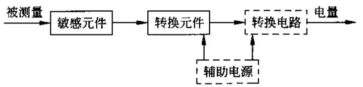
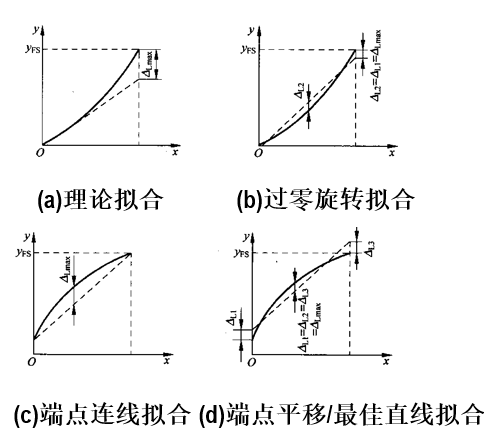
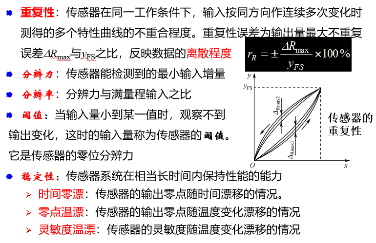
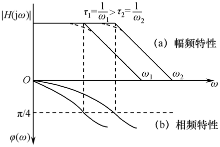
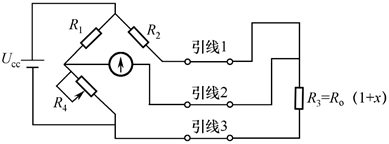

物联网复习
Chap5 传感器性能与电参数测量
传感原理
信息感知是要将物体的力学、热学、磁等变换为电阻、电容、电感、电流、电压等基本电参量的变化。
传感器：
能感受被测量并按一定规律转换成可用信号的器件或装置，通常由敏感元件和转换元件组成。
含义：
传感器是测量装置，能完成检测任务；
其输入是某种被测量，可能是物理量或化学量、生物量等;
其输出是某种便于传输、转换、处理和显示的物理量，如气、光、电等，目前主要是电量;
输出量与输入量有单值确定的对应关系，且有一定精确度
传感器类型
同种参量可用不同原理的传感器测量
基于一种传感原理可制作多种参量传感器
- 按基本效应分类：物理型、化学型和生物型
- 按构成原理分类：物性型传感器和结构型传感器
- 按能量转换原理分类：有源传感器和无源传感器
- 按输出信号的性质分类：模拟式传感器和数字式传感器
- 按输入物理量分类：位移传感器、压力传感器、速度传感器、温度传感器及流量传感器等
- 按工作原理分类：电阻式、电感式、电容式及光电式等。
- 按测量方式分类：接触式传感器和非接触式传感器
传感器组成
敏感元件：感知+输出
转换元件：参量类型变换
转换电路：有用信号输出
最基本的：敏感+转换

传感器的信号调理与接口
信号调理
作用：
调理敏感/转换元件或者传感器的输出信号，使其更好地满足后续信号传输、处理或显示的要求。
位置：
敏感元件(非电量)—[检测电路]—>电参量(电压、电流等)—[信号调理]—>电压—[DAQ]—>数字量
主要类型：
电平调整、线性化、信号形式变换、滤波、阻抗匹配等
主要实现方式：
模拟电路（集成器件）
转换电路、检测电路、信号调理电路之间的界限并不很明确，但功能作用明确
接口与数域
系统模块化和输出标准化的意义：使得不必深入了解各功能模块内部原理及结构，就可对整个系统进行设计、实现且便于维护。
接口与数域
接口：
实现两功能模块间电气参数连接的部分。
接口电路可工作在同一电气参数范围，如将传感器输出的模拟信号调理成标准输出信号；
也可将信号从一个数域变换到另一数域，如A/D转换电路；
另一项关键作用是实现标准化。
数域：
用来表示或传输信息的某种参量的名称。
模拟数域的信息由信号幅度(如电压、电流)携载；
时间数域的信息由时间关系(周期/频率、脉宽或相位)携载
数字数域的信号由脉冲数或“0”和“1”的编码串携载。
传感器的性能评价与选用
传感器的总特性
主要包括传感器与被测对象和后接仪器装置组成的测量系统的输入与输出的匹配、传感器的机械特性和工作特性等
- 机械特性
- 与储运、安装、对外连接（电源、机械、流体等）相关的（材料、力学等）特性和（环境、密封等）条件
- 工作特性
- 包括静态特性、动态特性、环境特性（施加特定外部条件
时与施加之后的性能表现）
- 包括静态特性、动态特性、环境特性（施加特定外部条件
- 传感器的误差等
传感器误差
误差：对被测量的测量值(结果)与其真值(真实值)之差
理想传感器：仅敏感特定输入；输出与输入呈唯一且稳定的关系（最好是线性）；输出量可真实反映输入量的变化，等等
表达方式：
- 绝对误差：测量值与真值或标准值之差，简称误差;
- 相对误差：测量值的绝对误差与标准值之比的百分数;
- 引用误差：仪表测量示值误差与其测量范围上限的百分比
性质分类：
- 系统误差：在相同条件下，对同一被测量进行多次重复测量时，某种保持恒定或按一定规律变化的误差
- 随机误差：在相同条件下，对同一被测量进行多次重复测量时，受偶然因素影响而出现的其绝对值和符号以不可知方式变化的误差
- 粗大误差：在测量结果中有明显错误的误差。含此误差的测量数据称为坏值，应予以剔除
误差原因
- 介入误差- 特点：不可避免, 影响程度不同；
- 应用误差- 原因：原理或设计的缺陷等；
- 特性参数误差- 原因：固有；影响使用及有效工作范围；
- 动态误差- 原因：对快变信号的响应滞后：
- 环境误差- 原因：环境参量变化或外界因素
静态特性
静态特性：
传感器在被测量处于稳定状态时的输出-输入(静态函数)关系。表征传感器的工作质量，由传感器内部结构参数决定。
静态测量是指测量过程中被测量保持恒定不变(即，系统处于稳定状态)时的测量。当被测量为缓慢变化量，但在一次测量的时间段内变动的幅值在测量精度范围内，这时的测量也可当做静态测量来处理
静态标准条件是指没有加速度、振动、冲击(除非这些参数本身就是被测量)的影响，环境温度一般为室温20±5℃，相对湿度不大于85%，大气压力为101.3±8kPa(760±60mmHg)的情况
传感器的输出- 输入静态函数关系：
$$
y=a_0+a_1x+a_2x^2+\cdots+a_nx^n
$$
静态函数关系的特殊情况：
- 理想线性关系
- 非线性项中仅有奇次项， 有y(x)=−y(−x)的对称性
- 非线性项中仅有偶次项，有y(x)=y(−x)的对称性
差动技术：
将两个相同特性的传感器差动组合，可有效消除偶次非线性项
测量范围和量程：
量程是指检测系统测量上限和测量下限
[评价指标]线性度（非线性偏差）：
表征传感器的校准曲线与拟合直线的偏差程度
$$
\begin{gather}
r_L=\pm\frac{\Delta_{Lmax}}{y_{FS}}\times100%\\
\Delta_{Lmax}为最大偏差；y_{FS}为满量程时的输出值
\end{gather}
$$

方法(d)兼顾零点和最大偏差
[评价指标]灵敏度：
传感器的输出增量与相应的输入增量之比
- 对于线性传感器,灵敏度是传感器特性直线段的斜率
- 非线性传感器的灵敏度, s=dy/dx
[评价指标]迟滞：
传感器对正向(输入增大)和反向(输入减小)输入的实际响应特性曲线的不重合程度
- 迟滞环：正、反向特性曲线形成的闭环
- 迟滞误差：为正、反行程输出的最大差值与满量程输出值yFS之比
[评价指标]重复性及其他：

- 综合误差(精度)：传感器的示值与被测量真值之间的最大偏差。通常是综合考虑室温下传感器的线性度rL（非线性误差）、迟滞误差rH和重复性误差rR的综合值
- 量程（测量范围）、灵敏度、分辨力是衡量传感器基本功能特性的指标，决定其工作能力；
- 线性度、重复性、迟滞、漂移、稳定性、综合误差是反映精度特性的指标，决定传感器在何种程度上能完成其测量
动态特性
动态特性：
传感器对随时间变化的输入量的响应特性；反映了传感器的输出能真实再现变化的输入量的能力
动态特性，常用的两种方法有频率响应分析法和瞬态响应分析法
时间常数：
时域内研究传感器对“标准”输入信号的响应特性
保持幅值稳定的响应带宽：
在频域内借助传递函数研究传感器对正弦输入的响应特性，包括幅频特性和相频特性
- 幅频特性：线性系统在正弦输入下的输出幅值与输入幅值之比，以$|H(j\omega)|$表示；
- 相频特性：输入与输出之间随频率而变的相位特性，以$\varphi(\omega)$表示
$0<\omega <\omega_1$内幅频特性稳定，相频特性线性
频率响应特性：
拓宽固有频率，则在指定精度下的平坦区间也将拓宽
典型一阶传感器的频率特性为：
$$
H(j\omega)=\frac{A}{1+j\omega\tau}
$$
一阶频率特性的特征参数可用3 dB频率$\omega_c$表示，即: $\omega_c=1/\tau$。此处$\tau$称为传感器的时间常数。

传感器的时域响应与动态品质评价
时间响应特性与动态品质的关系
- 时间常数$\tau_0$。传感器输出值由零上升到稳定值的63.2％所需要的时间
- 上升时间$t_r$。响应从最初稳态值的5％或10％上升，第一次达稳态值的90％或95%所需的时间。
- 响应时间$t_s$。输入量开始起作用到输出进入规定的稳定值范围所需的时间，一般与规定误差一同给出。(读数等待时间)
- 超调量$\sigma_p$。指输出第一次达到稳定值又超出稳定值而出现的最大偏差，用相对稳定值的百分比来表示，如$\sigma_p=y_m/y(\infty)$为20％。
- 峰值时间$t_p$。传感器输出值由零上升超过稳定值，到达第一个峰值所需要的时间
传感器的标定
标定：
利用已知量输入到传感器，测量其相应输出量，进而得到传感器输出−输入特性的过程。
校准：
传感器使用或存储后的性能复测。校准与标定本质相同。
目的：
通过实验和实验数据处理得到传感器数学模型及性能指标。
标定系统：
标定实际是针对整个传感器系统的实验，需构建相应系统。
传感器的精度，精密度、不确定度概念
精度：即精确度(accuracy)，指测量被测量得到的某一测量值与该被测量真值的符合程度。真值已知时才有意义。
精密度：指测量的重复程度，即对某一稳定的被测量，由同一测量者，在相同条件下，连续重复测量多次得到测量结果的分散程度。精密度不需知道被测量的真值。
不确定度：指对应于某一测量值的一个区间，任何重复性的测量结果将出现在这一区间内。
不确定度区间通过对实验结果进行不确定度估计得到。
用不确定度表达测量结果时，应尽可能将不确定度的区间缩小，再加上置信概率(测量值落在该区间的可能程度)
传感器设计和选用的三原则
整体需要原则
高可靠性原则
高性价比原则
- 依据测量对象和使用条件确定传感器类型
- 线性范围与量程【量程是否满足要求，并考虑使用过程中使传感器尽可能处在最佳工作段（一般为满量程的2/3以上处）和过载量】
- 灵敏度【在线性范围内传感器的灵敏度足够高，使得相同输入下的输出较大，有利于后续处理。但灵敏度太高，外界混入噪声容易，幅度也大，容易使测量系统进入非线性区，影响测量精度】
- 精度
- 频率响应特性【频率响应范围宽，同时希望传感器的响应延迟越短越好。】
- 稳定性【适应环境；减小环境影响】
传感器类型
按变换分类：
- 一类将被测量直接转换为电量，即敏感元件一次完成变换；
- 一类借助电、磁、光、热、位移、力等物理量之间的相互转换最后转换成电量，即敏感元件将被测量转换为中间量，再由转换元件变换为电量。
按构成分类：
- 基本型的将光、磁、热、力、气体等量变换成电量；
- 组合型的组合、应用基本型的器件经过二次或以上的转换，最终变换为电量。
电阻传感
用敏感电阻被测量的变化转换成电阻值变化
偏转法
用恒压源供电测电阻电流，或用恒流源供电测电阻电压(恒流激励电阻测量法)；两者是最简单的偏转法。
双读数法(比例法) ：
先读固定电阻的端电压Ur=IRr，再读串接的待测电阻端电压Uo=IRo；
分压法
用于测阻值变化范围很大的以及非线性敏感的电阻检测方法
电桥法
惠斯通电桥常用于测量小的阻值变化。
采用远距离传感器进行高精度测量时，必须考虑引线电阻影响（有的电阻受温度变化带来误差）。
惠斯通电桥的三引线平衡测量法可以克服上述问题

- 其引线1和3须相同且经受相同温度变化，引线2则无关紧要
- 前述四引线法可完全克服引线影响，但成本相对增加
不平衡电桥的非线性补偿法: 差动测量
电桥法(半桥)/电桥法(全桥)
全桥差动电路的输出也为线性，且灵敏度比半桥式高一倍。
$$
k=R_1/R_4=R_2/R_3
$$
对于k=1的电桥，灵敏度高，但非线性严重
非线性问题的其他对策：
牺牲灵敏度换线性，例如取k=10或更大，并提高供电电压以提高灵敏度；
受传感器自热限制，实际中宜采用小占空比的矩形电压作激励信号。
用模拟或数字技术使输出线性化。
小结
- 测电阻的一般方法：偏差法、分压法、平衡和不平衡电桥法
- 电阻测量中的常见问题：自热和引线电阻影响、非线性、电源电压波动影响
- 常见对策：限制工作电流、三线或四线电阻法、降低灵敏度、采用差动电桥、借助A/D转换器进行比例测量。
电容传感
- 变极距的电容传感器的灵敏度与极距平方成反比，以极距变化为输入可得到高灵敏度。
- 对于变电介质的电容位移传感器，传感器电容与输入位移呈线性关系。
差动方式降低非线性，同时使灵敏度提高1倍
作用形式：
- 直接作用式
- 电容变换器，不需弹性元件，直接感受被测量
- 例如测量引起电容两极板之间介质的介电常数变化的因素
- 间接作用式
- 电容传感器由弹性元件与电容变换器组成。
- 由敏感元件感受被测量，输出中间变量，如极板间距变化或有效面积变化，电容变换器再将中间变量转换为电容变化输出。
测量
影响电容测量的主要因素：
- 激励频率：
低频时电容器呈电阻特性、高频呈容性和感性；激励频率高，对测量电路输入阻抗的要求低，利于测量，但过高时对电路要求高、功耗相对大；频率应适中。
- 激励信号:
常用方波，但其响应输出带宽需比激励信号频率高10倍以上，而其他波形的响应输出带宽一般为1/2或1/3，以正弦波为激励，测量精度高，但功耗也高。
- 连接电缆/导线带来的寄生电容（分布式）：
寄生电容与传感电容并联，且容量可能与信号电容平级或更大，因此，其影响很大。对策：尽量缩短连线。
主要测量电路：各种振荡器、电桥、充/放电等，从克服寄生电容影响和微型化及其他性能考虑，集成化方式实现为最好
振荡器式检测电路
原理：使振荡器频率受敏感电容控制，转换为测频率问题；
常用类型：RC振荡器式和LC振荡器式。
RC式特点：简单，但频率稳定性不高、灵敏度较低，不适于分辨率高于0.01pF的场合。
RC张弛振荡器将电容转为频率或脉宽，但易受杂散或电缆电容影响。
将张弛振荡器与数字电路结合，使抑制高、低频干扰的能力强，振荡频率稳定，不受寄生电容影响，有效提高精度。
充/放电式电路：
利用方波控制电路中的模拟开关，实现对被测电容的充/放电控制，形成受控的波形宽度
电感
以磁场为媒介或基于电磁感应，利用被测量产生或引起的磁阻变化使传感线圈的电感变化实现感测。
性能特点：
结构简单可靠，输出功率大，抗干扰能力强，对工作环境要求不高，灵敏度和分辨力较高，传感器输出信号强，线性度和重复性较好；但频率响应低、不宜快速动态测量、尺寸因线圈限制难以减小
自感式传感器
将被测非电量的变化转换成自感变化，在线圈形状及线圈匝数不变的情况下，可通过变磁阻实现自感系数变化。
变气隙型自感式传感器
传感器的衔铁因被测体带动而产生同步位移时，引起磁路中气隙磁阻相应变化，导致线圈电感变化。
特点：
灵敏度高，但非线性严重，只能用于小位移测量。
气隙面积变化型自感式传感器
根据电感与磁路磁阻的关系，当d 固定，改变气隙导磁面积S0时，L 随 S0变化。当衔铁随被测量只产生左右位移Dx时，L是位移Dx的单值函数。
特点：
输入与输出为线性关系，但可测的线性范围受磁路限制而有限。
螺管型自感式传感器
传感器的螺管线圈中插入一活动衔铁，衔铁在螺管中运动时磁阻变化引起L变化。该类传感器实际常用差动结构。
初始时，铁芯置于两线圈
中央，当铁芯移动时，两线圈的电感产生
相反方向的增、减，然后将两个电感接入
测量电桥的相邻桥臂，可得比单线圈工作
方式更高的灵敏度和更好的线性度。
互感式传感器
互感式传感器实质是变压器，其一次线圈接稳定的交流激励，二次线圈因感应产生相应输出；被测位移或转角等使互感变化，输出电压随之变化。
其二次侧常用两个线圈反串联接成差动形式，这种传感器又称差动变压器。
实用较多的是螺管式差动变压器
零点残余电压(零残)：实际中铁芯居中时eo＝U0，不为零, U0即零残。
原因：两个二次线圈的电气参数不可能完全相同、制作结构不对称以及铁芯的磁化曲线存在非线性。
影响：零点残余电压使传感器在零点附近不灵敏，并可能使后接放大器提前饱和，可能使某些执行机构产生误动作。
对策：有各种补偿电路，其中差动变压器输出端接相敏检波电路，可判断铁芯位移方向，也能消除零点残余电压。
电涡流式传感器
原理：金属块置于变化磁场中或在磁场中运动时，金属导体内部会产生感应电流，这种在导体内是自身闭合的电流称为电涡流或涡流。
可对一些参数进行非接触连续测量
传感器类型：
- 高频反射式，常用来测位移、振动等物理量；
- 低频透射式，多用于材料厚度测量。
电感参数测量
单线圈参数
测量方式主要有调幅式和调频式。
单线圈工作的传感器的测量电路常用交流电桥。
调频式测量与电路：
传感线圈接入LC振荡器回路，间距改变时，在涡流影响下传感线圈的电感变化导致振荡频率变化。
调幅式测量：
传感线圈和测量电路的电容C并联组成谐振回路。石英晶振起恒流源作用。
双线圈（差动）
差动自感传感器的测量电路主要采用两个敏感线圈的交流桥。
差动互感传感器则将两二次线圈反串连接输出；为辨别铁芯移动方向和消除零残，常用差动整流或相敏检波电路。
Chap6 物理效应传感器
物理效应传感器
常用的物理效应：
- 弹性效应
弹性效应
弹性材料在弹性变形范围内能感受相应的力作用而产生弹性变形，外力消失后又能恢复原状的现象。
压力- 位移特性是非线性关系。
基本特性
刚度：
弹性元件产生单位位移所需的力(或压力)；它反映弹性元件受外力作用时抵抗变形的能力。用符号k表示，则：
$$
k=\lim\limits_{\Delta\omega\to0}\frac{\Delta F}{\Delta \omega}=\frac{dF}{d\omega}
$$
灵敏度：
作用于弹性元件上单位力（或压力）所产生的变形；它是刚度的倒数；用符号K代表，
$$
K=\frac{d\omega}{dF}
$$
若弹性特性为线性，则灵敏度为常数；弹性特性为非线性，则灵敏度为变数，也即表示此弹性元件在弹性变形范围内，各种受力情况下的变形量不相等。
固有频率:
弹性元件的动态特性很大程度上由其固有频率决定，为减少动态误差应提高其固有频率。但实际计算时只给出最低固有频率，也可用下式估算：
$$
\begin{gather}
f=\frac{1}{2\pi}\sqrt{\frac{k}{m_e}}\\
m_e为元件的等效质量
\end{gather}
$$
其他因素
材料性能影响弹性元件的特性；元件结构对其功能和性能有影响；温度变化会改变材料的弹性模量。
电阻应变效应
电阻应变是力作用的结果，涉及应力、应变、弹性模量和泊松比等概念。
应力：
力/受力面积；应力为正，表物体受到拉力作用；应力为负，表示物体受压。应力作用的结果是使物体产生应变。
应变：
应力所致长度变化/未加应力时的原长。
应变与应力呈线性关系，其斜率为物体的弹性模量E=应力/应变
对于线性拉伸或压缩，弹性模量称为杨氏模量E；
对于剪应力，相关的弹性模量称为剪切模量S。
应变效应
元件受力作用产生应变时，其电阻值发生变化的现象称应变效应；此效应工作的元件称应变片。
灵敏系数k定义为电阻的相对变化与应变之比，即：$k=(\Delta R/R_0)/\varepsilon_L$, 其中R0是无应变时的电阻。
应变片的电阻变化可用下式表示：
$$
\Delta R/R_0=(1+2\mu)\varepsilon_L+C(1-2\mu)\varepsilon_L=k\varepsilon_L\\
元件的纵向应变\varepsilon_L=\frac{\Delta l}{l}
$$
可知，金属材料的应变效应主要由结构尺寸变化造成，灵敏系数主要由$(1+2\mu)$决定
金属应变片
金属电阻应变片的组成：
保护片+敏感栅+基底+引线
敏感栅为金属丝或箔，粘贴在绝缘基底上，上面再贴一层绝缘保护片，然后在敏感栅的两引出点引线
灵敏系数：敏感栅存在横向效应等因素影响，使应变片的灵敏系数小于敏感栅材料的灵敏系数。
通常应变片的灵敏系数通过实验由给定应变下的电阻值变化确定，即：$K=(\Delta R/R)/\varepsilon$。
半导体应变片
半导体应变片主要基于半导体的压阻效应，直接用单晶锗或硅等材料经切割、研磨、切条、接引线、粘贴等工艺制成。
相对金属应变片，半导体应变片的灵敏度系数很高，温度稳定性和重复性差。
小结
金属应变片的应变效应以结构尺寸变化为主，灵敏系数相对小；
半导体应变片的应变效应主要基于电阻率变化(压阻效应)，其灵敏系数大。
应变片的应用：主要用于结构应力、应变分析和作转换元件
在第一类应用中，将应变片贴于待测构件的测量部位，测量构件的应力或应变
在第二类应用中，应变片作为转换元件贴于弹性元件上，与弹性元件组合实现测量力/压力及位移、加速度的传感器
应变电阻测量常用电桥法。
为提高灵敏度、克服非线性，常用半桥差动 或全桥差动 方式。
特点
- 测量范围广
- 线性度好，精度较高，误差可小于0.1%或更小
- 频响好
- 性能稳定，工作可靠，性价比高
- 适应恶劣环境、大加速度和振动条件
须考虑横向效应所致横向灵敏度与补偿温度影响
压阻效应
即半导体晶体受力作用后阻值增加或减小的现象。
本征半导体的压阻效应机理：半导体因受机械力作用，使晶格间隔改变，从而引起其禁带宽度(电子运动的能级)变化从而导致电阻变化。
压阻元件基于压阻效应，在半导体材料基片上经扩散电阻而制成。作为敏感元件的基片受外力作用而变形，使基片上的扩散电阻组成的电桥产生不平衡输出。
压阻系数
固态压阻器件
压电效应
外力沿压电材料特定的晶向作用使晶体变形，使得相对的晶面上产生电荷，去掉外力后压电材料又重回不带电状态，这种由外力作用而使材料产生电极化的现象称为正压电效应。
压电效应可逆。
在压电材料特定晶向施加电场时，不仅有极化现象发生，还产生机械形变；去掉电场，应力和形变也随之消失，这种现象称为逆压电效应。
压电元件的等效电路和测量电路
压电式压力传感器
压电式加速度传感器
光电效应
物质在光照作用下释放电子的现象称为光电效应；
外光电效应：
光照射使电子逸出金属表面的现象。
内光电效应：
物质受到光照时其内部原子释放的电子留在体内，使物质的电导率变化或产生光生电动势的现象。
光电导效应
光生伏特效应
光电器件
光电池
光敏二极管
光敏三极管
光敏电阻
光电器件的主要特性
光照特性
光谱特性
响应时间
温度特性
峰值探测率
典型集成光电检测器件
光电传感器的构成与类型
构成
常用光源
光电传感器类型
红外传感原理与探测器
红外光的最大特点：存在光热效应、辐射热量。
红外测温原理
基尔霍夫定律
普朗克定律
维恩位移定理
斯特藩−波尔兹曼定律
红外探测器分类
基于热效应的热探测器, 如热释电探测器、热电偶、热电阻、气动探测器等；
基于光电效应的光子探测器, 如光电导探测器、光生伏特探测器、光电子探测器等。
光子探测器比热探测器反应灵敏，响应快得多，一般响应时间为10−9s或更短; 热探测器在ms级以上；要在很低温度下工作，需配致冷器, 是选择(光谱)性探测器.
热探测器在室温下工作不需制冷；在整个红外波段可有平坦的光谱响应(又称无选择性探测器)
红外探测器性能参数
响应率
光谱响应
噪声等效功率
探测率
响应时间
光纤传感
在传光过程中，光纤易受外界因素如压力、温度、电磁场等变化影响，使光纤中光波的参数如光强、相位、频率等变化。测出光波参数的变化，可得相应的被测量。
光纤种类
按材料分类：多组分(材料成分)、石英系列、液芯和塑料等四类光纤
按纤芯折射率分类：阶跃型(SIF)、渐变型(GIF)
按传输模式数分类：分单模(SMF)和多模(MMF)光纤
传光原理
斯涅尔定律
光纤特性
光纤损耗
色散
光纤传感器分类
按光纤所起作用分类
功能（FF）型：
光纤既传光又作敏感元件。光纤受被测对象作用使光参量如光强、相位、偏振态等得到调制，携带了被测信息。
非功能（NNF）型：
光纤只传光，入射和出射光纤之间有敏感元件，光纤不连续。对待测对象的调制由光转换敏感元件实现。
按光纤中的光被调制的原理(光纤敏感原理)分类
强度调制光纤传感器
利用外界因素改变光纤中的光强，通过测光强变化来检测外界物理量。
相位调制型光纤传感器
利用被测量改变光纤中光波相位，通过检测相位变化测量被测量。
传感器中调制相位的常用物理效应：应变效应、光弹效应、磁致伸缩效应、声光效应、光热效应、萨格纳克效应等。
频率调制光纤传感器
利用外界因素改变光频率，通过检测光频率变化测量被测量。频率调制并不改变光纤特性，光纤仅传输光。频率调制基于光学多普勒效应。
偏振调制型光纤传感器
单模光纤中的光是线偏振光可用两个相互垂直的偏振分量来等效。
偏振调制机制都包括：电光、磁光和光弹性这三种
按测量对象分类:
光纤压力、位移、温度、流量等传感器。
光纤传感器的组成
基本组成：光源+光纤耦合器+光纤+光探测器等。
光源
光纤耦合器
光纤
光探测器
磁电效应
根据电磁感应定律线圈感应电势大小取决于线圈匝数和穿过线圈的磁通变化率。磁通变化率与所加磁场强度、磁路磁阻及线圈相对于磁场的运动速度有关，改变任一参数，均导致电势变化，从而得到不同结构的磁电式（也称电动式）传感器。
磁电式传感器分类：
动圈式
动磁铁式
磁阻式
霍尔效应
霍尔元件
霍尔元件的主要参数
输入电阻和输出电阻
额定控制电流Ic
灵敏度
磁场的线性
不平衡电压
温度特性
补偿法I：输入端并联电阻
补偿法II：热敏电阻法
磁电阻效应
非磁体（半导体）的磁电阻效应
物理磁阻效应:弱磁场中材料电阻率随磁场增大的效应;
几何磁阻效应:由半导体形状改变引起的阻值变化效应
强磁性金属的磁电阻效应
强磁阻效应
Ni-Fe、Ni-Co基合金等高磁导率的金属称强磁性金属，强磁场中强磁性金属的电阻率随磁场增强而减小
定向(或各向异性)磁电阻（AMR）效应
在弱磁场中，当磁场强度大于某一值时，强磁性金属的电阻率与磁场强度无关，只与磁场和电流的方向夹角有关，磁阻呈各向异性，此现象称为AMR效应，即平行于外磁场方向的强磁性金属磁敏电阻的电流方向的电阻率和垂直外磁场方向的电流方向的电阻率发生变化的效应。
强磁性磁阻器件主要利用其定向磁阻效应
磁敏电阻元件(磁阻元件)
半导体材料确定的情况下，磁阻元件的电阻与磁感应强度成平方关系，仅适用磁场强度较弱的情况。在强磁场环境中，半导体阻值与磁感应强度呈线性关系。
磁致伸缩效应
压磁效应是磁致伸缩效应的逆效应。
压磁应力灵敏度: 单位机械应力引起的磁导率相对变化
热阻效应
物质电阻率随温度变化的现象。
金属电阻
半导体电阻
热电效应
热电效应（塞贝克效应）
接触电势
温差电势
综合上两式表明，两种不同电极材料可组成热电偶，热电偶回路中形成的热电势是热电偶两连接端的温度差的函数。
热电偶的特点：敏感元件和转换元件为一体、直接将与被测温度对应的热能转换成电能、测温范围较宽。
热释电效应
超声波传感器
超声测距和物位测量是超声最成功的应用领域之一。
超声波换能器
习惯上把超声的发射和接收部分均称为超声波换能器。
按结构分为直式换能器、斜式换能器等；
按作用原理分为压电式、磁致伸缩式、电磁式等。
实用中压电式换能器最常见。
声表面波原理(surface acoustic wave，SAW)
声表面波叉指换能器
目前唯一实用SAW换能器，SAW传感器的关键器件
声表面波谐振器
SAW谐振器是SAW传感器的一个关键, 它由SAW振荡器(SAW resonator, SAWR)或SAW延迟线与放大器、匹配网络组成。SAWR由IDT及金属栅条式反射器构成